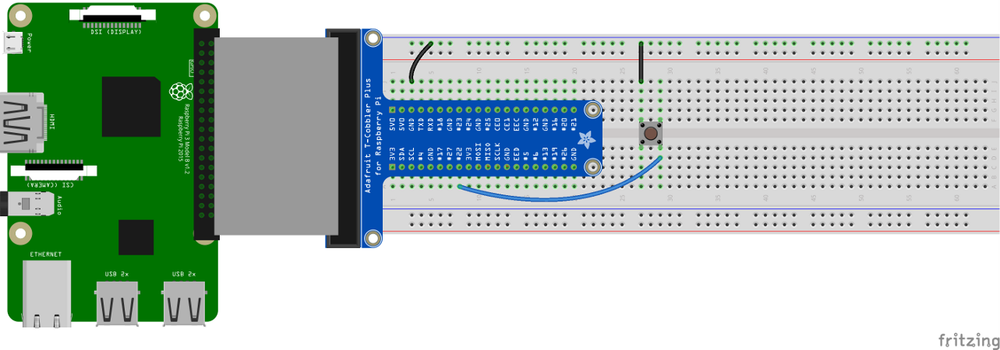
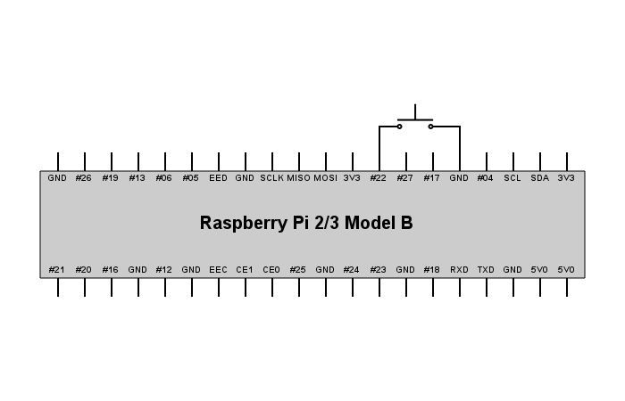

Licenca
To delo je na voljo pod pogoji slovenske licence Creative Commons 2.5:
priznanje avtorstva - nekomercialno - deljenje pod enakimi pogoji.
Celotna licenca je na voljo na spletu na naslovu http://creativecommons.org/licenses/by-nc-sa/2.5/si/. V skladu s to licenco je dovoljeno vsakemu uporabniku delo razmnoževati, distribuirati, javno priobčevati, dajati v najem in tudi predelovati, vendar samo v nekomercialne namene in ob pogoju, da navede avtorja oziroma avtorje in izdajatelja tega dela. Če uporabnik delo predela, kar pomeni, da ga spremeni, preoblikuje, prevede ali uporabi to delo v svojem delu, lahko predelavo dela ponudi na voljo le pod pogoji, ki so enaki pogojem iz te licence oziroma pod enako licenco.

Hišni zvonec
Prva naloga pri projektu glasbene skrinjice bo izdelava hišnega zvonca. To pomeni, da boš na preizkusno ploščico dodal/-a gumb in ga sprogramiral/-a tako, da se bo ob pritisku na gumb oglasil hišni zvonec.
Strojna oprema
- 1 Malina
- 1 preizkusna ploščica (angl. breadboard)
- 1 zatič oblike T s kablom (angl. T-cobbler with breakout cable)
- 1 pritisni gumb (angl. tactile switch)
- 1 upor 10 kΩ
- vtične žičke moški-moški (angl. jumper wire male-to-male)
Programska oprema
- Python 3 (prednameščen na Raspbianu)
- Pythonov modul
gpiozero(prednameščen na Raspbianu) - Pythonov modul
pygame(prednameščen na Raspbianu) - Zvočna datoteka doorbell.ogg
Izkaže se, da ima pythonov modul pygame najmanj težav pri predvajanju zvočnih datotek v formatu Ogg Vorbis. Zato bo najbolje, da zvočne datoteke, ki jih želiš uporabiti v tem ali drugih projektih, najprej pretvoriš v format Ogg Vorbis. To lahko narediš na primer s programom Audacity, ali pa uporabiš kakšno spletno storitev za pretvarjanje med različnimi formati zvočnih datotek.
Navodila
- Poveži Malinine GPIO nožice in preizkusno ploščico s pomočjo T-zatiča in kabla.
- Poveži gumb z nožico GND in nožico GPIO 22 (glej zavihek Vezje).
- Odpri IDLE in ustvari novo datoteko tako, da klikneš File > New file.
- Shrani novo datoteko tako, da klikneš File > Save. Datoteki daj ime
zvonec.py. - V isto mapo shrani tudi zvočno datoteko doorbell.ogg.
- V datoteko
zvonec.pyvnesi kodo z zavihka Koda. - Shrani kodo s Ctrl+S in jo nato zaženi s F5.
- Pritisni gumb in zaslišati bi moral/-a zvok hišnega zvonca.


# encoding: utf-8
import gpiozero
import pygame
pygame.init()
gumb = gpiozero.Button(22)
zvonec = pygame.mixer.Sound('doorbell.ogg')
while True:
if gumb.is_pressed:
zvonec.play()
 Izvorna koda
Izvorna koda